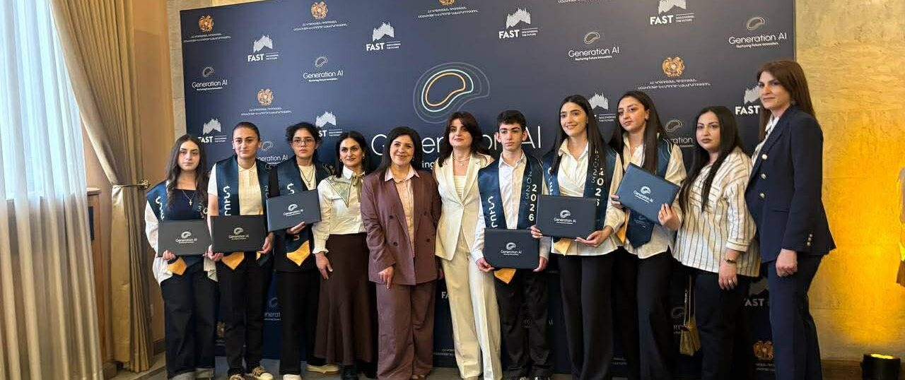
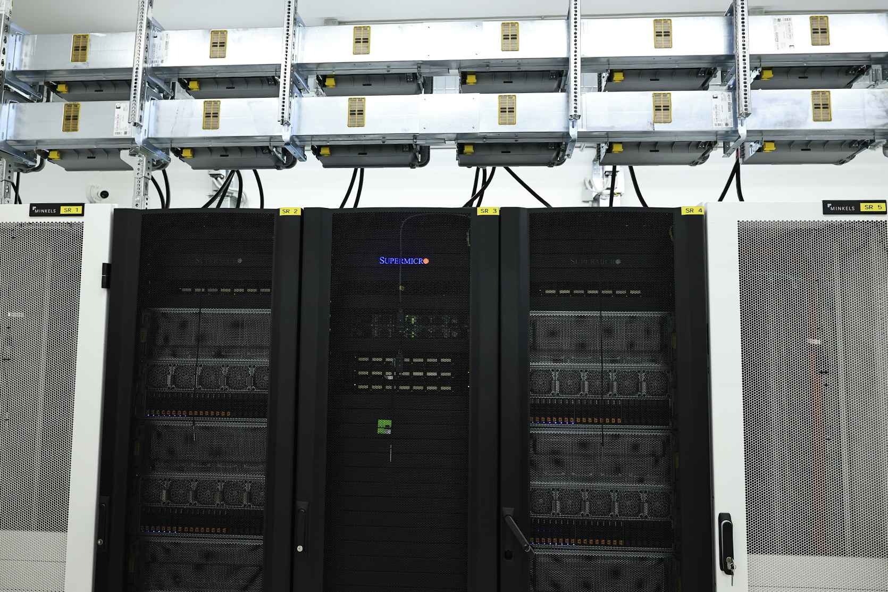
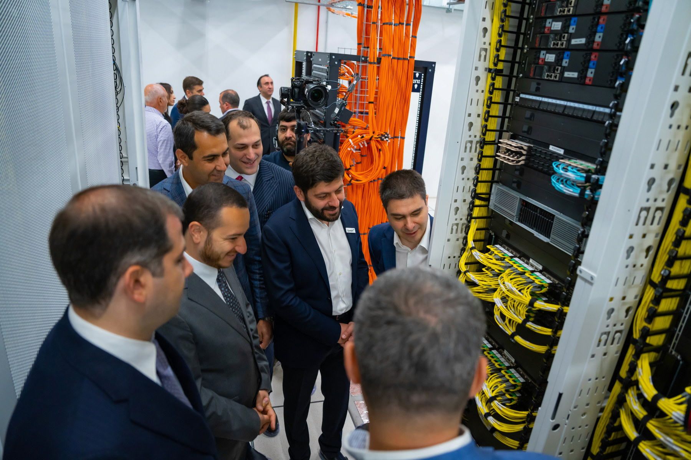
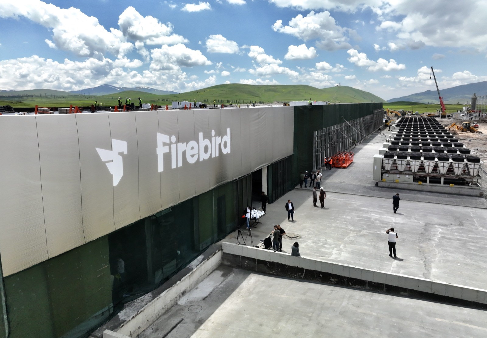
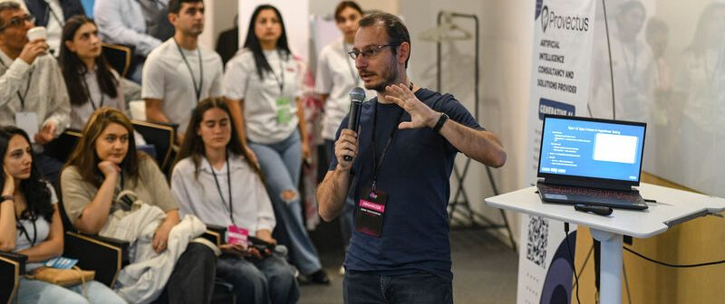
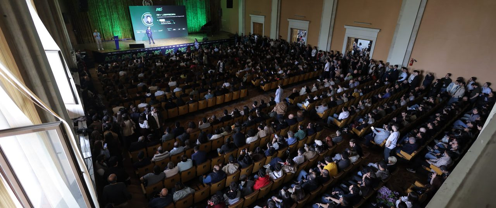
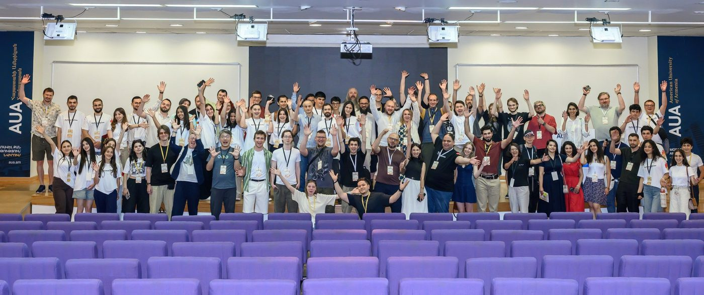
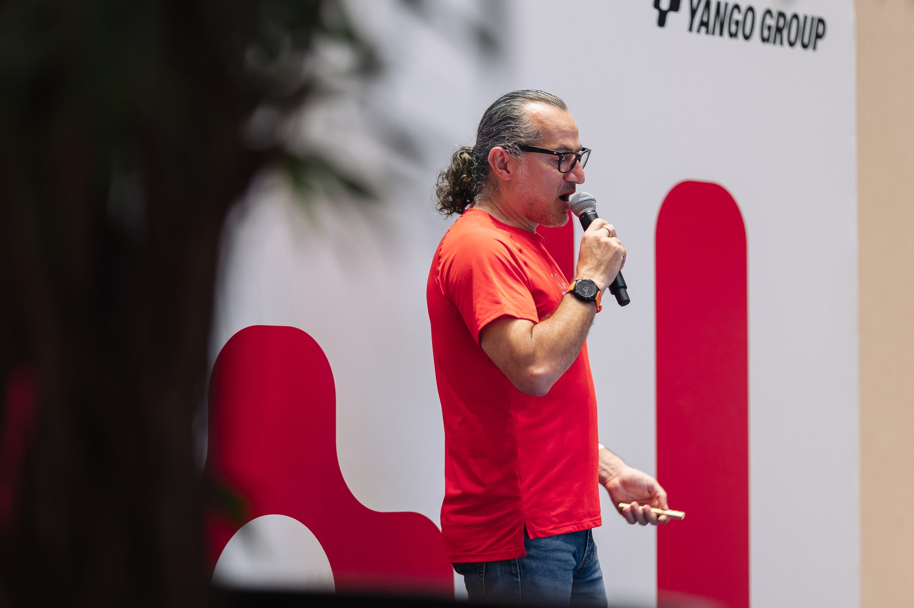
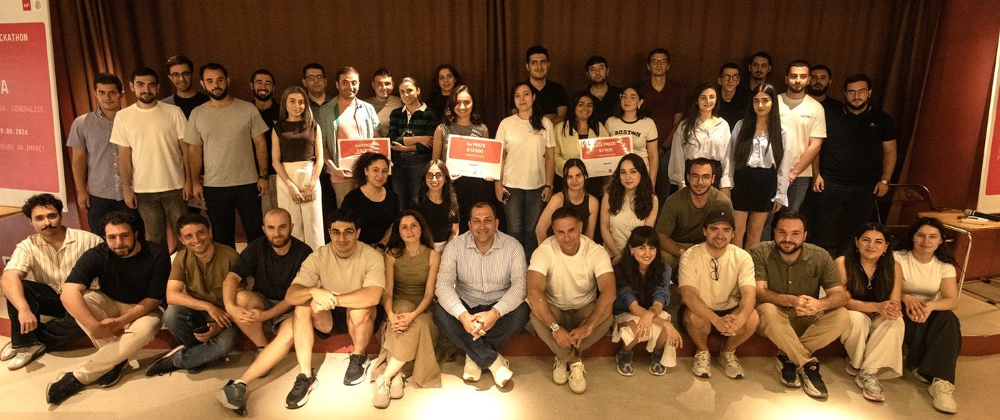

RESEARCH
23 active research groups are mapped across core, industrial, and applied AI; 103 named publications are cited.
YerevaNN research report
August 2026
A public, mobile-friendly edition. It distinguishes verified current activity from announcements and planned activity.
Snapshot: August 2026
Armenia has a small but substantive AI ecosystem. It combines active academic and industrial research groups, a varied product and services sector, multi-year AI education in public high schools, university and non-degree technical programs, a dense community centered in Yerevan, and a rapidly expanding base of local GPU infrastructure. These components are real, but they differ greatly in scale, maturity, and the strength of the public evidence behind them.
23 active research groups are mapped across core, industrial, and applied AI; 103 named publications are cited.
112 organizations are profiled across AI products, consulting and services, and internal AI teams.
Available 2026 admissions data cover 487 Generation AI admissions, 460 undergraduate admissions, and 88 master's admissions across programs with usable data.
YSU, Eleveight AI, and Firebird operate 6,736 publicly documented data-center GPUs as of August 2026.
The government funds AI research and public compute, coordinates school integration, subsidizes access to commercial infrastructure, supports industry, and is beginning to deploy and govern AI in public services.
Recurring conferences, reading groups, meetups, summer schools, and specialist online groups connect researchers and practitioners.
1. Demonstrated research capacity exists, but it is concentrated. Armenia has identifiable research groups and internationally visible outputs, including both core AI research and AI-enabled work in other scientific fields. The number of stable groups and experienced supervisors remains limited. 2. The commercial landscape is broader than the research landscape. Many companies build AI products or provide AI services, but only a smaller subset has verifiable public research outputs. The report therefore separates business model, technical approach, and public research activity. 3. Education has developed recognizable pathways. School programs, university degrees, professional training, and research-oriented enrichment now form several routes into AI. Outcome reporting, doctoral specialization, and advanced supervision remain uneven. 4. Armenia is moving from GPU scarcity to an infrastructure build-out. Public, private, and commercial platforms now offer distinct access routes. Announced capacity should not be treated as operational capacity, and local benefit depends on transparent allocation, affordability, support, and measurable outputs. 5. The ecosystem is connected but institutionally fragmented. Community organizations and recurring events create strong informal links, while evidence, access rules, program outcomes, and current capacity remain scattered across institutions.
Throughout the report, current operations are separated from announced plans, core AI research from the use of AI in another field, and public evidence from unverified claims. The result is an evidence-based overview rather than a promotional ranking, national strategy, or policy proposal.
Research landscape
103 named publications cited. Counts reflect this chapter; cited outputs include papers, preprints and technical reports. Repeated titles counted once.
Status: Release candidate Evidence checked: August 2026
This chapter maps organizations in Armenia that publicly conduct research using machine learning or AI. It distinguishes three parts of the ecosystem:
Groups are included when their AI activity is documented through relevant papers, active research projects, or public models, datasets, and benchmarks. The chapter uses institutional pages, publication records, conference programs, and public research repositories as evidence.
The map is limited to publicly documented affiliations and outputs. Multi-institution and company papers are attributed to their Armenia-based contributors rather than treated as wholly Armenia-based projects.
Institution and history. YerevaNN began in 2016 as an independent scientific-educational nonprofit. The research team was later integrated into Yerevan State University as the YSU Machine Learning Research Group, while the YerevaNN Foundation continued to support research, fundraising, and scientific community building. The two names therefore describe one overlapping research group, not two labs.
How the group uses AI. The group's current program has two main directions:
Recent AI publications.
Robotics, perception, and control:
Molecular generation and optimization:
The group also publishes on general ML questions. A recent example is In-context learning in presence of spurious correlations, published in Transactions on Machine Learning Research in 2026.
Funding. More than half of the group's funding comes from Higher Education and Science Committee research grants administered through YSU. The remainder is fundraised by the YerevaNN Foundation from donors and local companies.
Institution and history. The Center of Advanced Software Technologies (CAST) at the Russian-Armenian University is a broader software-research center covering compilers, program analysis, cloud systems, autonomous systems, robotics, ML, and AI. Its Machine Learning Research Group is led by Karen Avetisyan.
How the group uses AI. The group develops ML methods and applications in speech and language processing for Armenian and other low-resource languages, including LLM benchmarks, as well as adversarial robustness of language models, distributed learning, multimodal emotion recognition, biomedical signal classification, and efficient computer vision.
Selected researchers. Researchers with publicly documented AI work include:
Recent AI publications. Recent publications include:
Funding. No public breakdown of the ML group's current funding is available.
Institution and history. This YSU laboratory was founded in 2022 and is headed by Ashot Harutyunyan. It is a separate research group from the YSU Machine Learning Research Group / YerevaNN.
How the group uses AI. Its recent work develops interpretable and uncertainty-aware machine-learning methods, including classifiers and clustering methods based on Dempster-Shafer theory.
Recent AI publications. Recent outputs associated with Ashot Harutyunyan and collaborators include:
Funding. YSU, state grants, and industry collaborations.
Institution and history. This research group was established through FAST's ADVANCE program, hosted and co-implemented by the American University of Armenia, and remotely supervised by Nelson Baloian of the University of Chile. Ashot Harutyunyan and Arnak Poghosyan were the senior local researchers; the team also included junior researchers and research interns. After ADVANCE funding ended, substantially the same team continued its research and publications.
How the group uses AI. The group develops interpretable and robust machine-learning methods for ill-structured data, with applications to automated diagnosis, root-cause analysis, incident discovery, intelligent trace sampling, and knowledge retrieval in complex cloud systems.
Recent AI publications.
Funding. FAST's ADVANCE program funded the group and lists AUA as its co-funding and co-implementing institution. The group's current funding is not publicly itemized.
Institution and organization. This activity is centered on AUA researchers and projects rather than a single institution-wide AI laboratory. Researchers including Varduhi Yeghiazaryan develop computer-vision methods for biomedical and hyperspectral imaging.
How the group uses AI. The research develops segmentation, super-resolution, classification, and learning methods for hyperspectral and medical images. AUA's Engineering Research Center project list documents a broader collection of related AI projects.
Recent AI publications. Recent publications include:
Funding. Project-specific university and grant support includes the Afeyan Family Foundation Research Grant, which AUA reports supported an ICIP 2025 hyperspectral-imaging paper.
Institution and history. The Mathematical Modeling & Machine Learning Laboratory (M3L) was established in June 2025 at the Institute of Mechanics of NAS RA and is led by Davit Piliposyan. It brings together researchers from the institute, YSU, IIAP, and industry.
How the group uses AI. M3L works at the intersection of machine learning and computational mechanics. Its program includes physics-informed learning and differentiable finite-element methods, 3D scene understanding, event-sequence representations, and agentic systems for retrieval, simulation, and optimization workflows.
Recent AI publication. Z3D: Zero-Shot 3D Visual Grounding from Images, ACL 2026, introduces a pipeline for localizing objects described in natural language within 3D scenes using multi-view images and vision-language models.
Funding. No public breakdown of the laboratory's current funding is available.
Institution and history. The Yerevan-based computer-vision group began with Hrach Ayunts, Hayk Gasparyan, and Sargis Hovhannisyan under the remote supervision of Sos Agaian through FAST's ADVANCE program. Hrach Ayunts subsequently became a local supervisor and, after defending his PhD, joined Yerevan State University's Faculty of Applied Mathematics and Informatics. The group continued its research after ADVANCE funding ended, supported through Armenia's state research-funding system.
How the group uses AI. The group developed deep-learning methods for robust visual perception, particularly visible and thermal image enhancement, object detection in adverse weather, multispectral and hyperspectral reconstruction, remote-sensing segmentation, and solar-panel fault detection.
Recent AI publications. Relevant outputs include:
Funding. The original collaboration was funded through FAST's ADVANCE program. After the ADVANCE grant ended, the group's research continued with state funding.
FAST's Machine Learning project, co-implemented with YSU and led by Arnak Dalalyan, operated from 2020 to 2024 and produced five publications on robust estimation, feature matching under noise and outliers, and generative modeling, including papers at AISTATS 2023 and ICML 2024. The group included Arshak Minasyan, now at CentraleSupélec in France; Tigran Galstyan, who recently joined NVIDIA Armenia; and Sona Hunanyan, who returned from Switzerland to join the project and now works at Philip Morris International.
Industrial AI research groups are funded by their respective companies; company-level research budgets are generally not disclosed. Since 2025, Armenian resident companies have also been able to seek formal qualification of research projects as R&D under a national tax-incentive scheme. The Ministry of High-Tech Industry publishes the application guidance, while an interagency expert commission evaluates whether projects meet the qualification criteria. According to the Ministry's overview of the scheme, qualifying activity is eligible for deductions in calculating profit tax and for depreciation deductions, while eligible employees performing professional R&D work are subject to a 10% income-tax rate.
Institution and history. Picsart maintains a company research program commonly presented as Picsart AI Research or PAIR. Armenia-based contributors include Shant Navasardyan, Levon Khachatryan, and Barsegh Atanyan. Its public research page and Hugging Face paper collection document its scientific output.
How the group uses AI. PAIR develops generative and discriminative computer-vision models for image and video creation, editing, inpainting, segmentation, and controllable diffusion.
Recent AI publications. Examples include:
Organization. NVIDIA's Armenia research team contributes primarily to the company's international research programs in language models and speech. The report does not identify a dedicated NVIDIA robotics operation in Armenia.
Publishing researchers based in Armenia. Erik Arakelyan, Edgar Minasyan, Rima Shahbazyan, Ivan Moshkov, Daria Gitman, Alexan Ayrapetyan, Sofia Kostandian, Nune Tadevosyan, George Zelenfroynd, Aleksei Karmanov, Aigul Dzhumamuratova, Viktor Kuznetsov, Lilit Grigoryan, Vladimir Bataev, Andrei Andrusenko, and Davit Karamyan.
Former Armenia-based publishing researchers. Nikolay Karpov was part of the Armenia team through 2025. Monica Sekoyan's 2025 Granary paper lists her with an NVIDIA Armenia affiliation; she is now based in Edinburgh. Aleksandr Laptev published NVIDIA speech-recognition work while based in Armenia in 2022 and is now based in California.
How they use AI. Their recent publications cover language-model reasoning and robustness, NVIDIA Nemotron model development, speech recognition and translation, diarization, and simultaneous speech translation. A 2025 visual-odometry paper has Armenia-based co-authors, but this publication alone is not treated as evidence of a local robotics team.
Reverse brain drain. NVIDIA Armenia provides a local research environment for researchers who trained and established publication records at leading universities abroad to continue their careers in Armenia. Erik Arakelyan moved to Armenia after completing his PhD at the University of Copenhagen. Edgar Minasyan similarly moved to Armenia after completing his PhD at Princeton University. Their subsequent relocation illustrates the team's role in attracting internationally trained researchers to Armenia.
Recent AI publications. Examples include:
Institution and history. Metric AI presents itself as an Armenia-based research lab focused on language technologies. Its public Hugging Face organization lists team members and releases.
How the group uses AI. The lab lists three programs: physical AI, including spatial reasoning and long-horizon robot planning; text-embedding models and evaluation for Armenian and other low-resource languages; and visual-document retrieval. The physical-AI program is presented as its current primary focus, while the document-retrieval line is described as past work.
Recent AI publications and outputs. Public work includes:
Organization. Armenia-based Deep Origin researchers with recent publications include Tsolak Ghukasyan, Vahagn Altunyan, Aram Bughdaryan, Tigran Aghajanyan, Khachik Smbatyan, and Garik Petrosyan.
How they use AI. Public work combines large-language-model agents for drug-discovery workflows, active learning and graph neural networks for molecular-property prediction and quantum-chemistry dataset construction, and hybrid machine-learning and physics-based methods for molecular docking and virtual screening.
Recent AI publications.
Organization. Denovo Sciences is an Armenia-founded, research-driven drug-discovery company with a scientific and engineering team in Yerevan. Its public research page documents its publications and research resources.
How it uses AI. Denovo develops generative and predictive methods for small-molecule drug discovery. Its platform combines deep reinforcement learning, molecular modeling, virtual screening, and machine-learning-based assessment to generate and prioritize drug candidates.
AI and computational drug-discovery publications.
Organization. Toxometris conducts Armenia-linked research in computational toxicology and molecular ML. Its publications include researchers Zaven Navoyan, Ani Tevosyan, Nelly Babayan, Lusine Khondkaryan, Hayk Navasardyan, Gohar Tadevosyan, and Lilit Apresyan, with collaborations involving YerevaNN, YSU, and the Institute of Molecular Biology of NAS RA.
How it uses AI. Its research covers learned molecular representations, QSAR modeling with molecular descriptors and fingerprints, graph neural networks, language models, boosting ensembles, and consensus models for toxicity, carcinogenicity, and molecular-property prediction.
Collaboration with IMB and YerevaNN. Toxometris, the Institute of Molecular Biology of NAS RA, and YerevaNN have an established collaboration connecting biological and toxicological expertise with ML model development. Their joint publications include:
Other AI publications and applications.
Organization. ServiceTitan's Yerevan office conducts applied AI work and supports a multi-year research collaboration with the American University of Armenia. Arman Zakaryan, Director of AI Engineering at ServiceTitan Armenia, has represented the company in the collaboration, while AUA researchers Habet Madoyan and Aram Butavyan have led the university teams.
How it uses AI. Public research covers visual document retrieval and RAG, natural-language processing for matching duplicate catalog items, conversational job scoping, retrieval of similar historical cases, price estimation, and automated sales-estimate preparation.
Recent AI publication and research projects.
Organization. Davit Shahnazaryan is associated with Amaros AI and YSU.
How it uses AI. The published work applies large language models to extract biomedical entities and relations and construct medical knowledge graphs from electronic medical records.
Recent AI publication. Large Language Models for Biomedical Knowledge Graph Construction: Information extraction from EMR notes, 2023.
Primary field. Computational materials science.
How it uses AI. The laboratory uses ML to search chemical and materials spaces, predict material properties, and accelerate candidate discovery. YSU explicitly describes this role in its laboratory overview.
Relevant AI work. A 2025 interdisciplinary project, Detection of Superconducting Materials at Room Temperature and Atmospheric Pressure Conditions Using Chemistry-Informed Neural Networks, combines materials data with chemistry-informed neural models. The laboratory also collaborates with the Functional Materials Group at the A.B. Nalbandyan Institute of Chemical Physics on ML-guided materials discovery. Recent joint and institute-led outputs include:
Funding. The projects receive university and state research support. The AI4X work acknowledges Higher Education and Science Committee grant 22RL-012; a consolidated current breakdown is not public.
Primary field. Theoretical and statistical physics, quantum technologies, and decision theory.
Organization. The Division of Quantum Technologies grew from a research group formed around 2015 and became a formal AANL division in 2022. Armen Allahverdyan leads the group; its researchers include Arshak Hovhannisyan.
How it uses AI. One line of the division's work studies causal and probabilistic inference: how hidden common causes can be recovered from observed distributions, how such representations relate to nonnegative matrix factorization, and how they can support reliable decisions in cases such as Simpson's paradox.
Relevant AI publications.
Funding. The recent common-cause research acknowledges Armenian Science Committee grants, including 20TTAT-QTa003 and 21AG-1C038. The division also lists institutional and external project support; a consolidated current breakdown is not public.
Primary field. High-energy astrophysics and multiwavelength astronomy.
How it uses AI. ICRANet-Armenia researchers use gradient-boosted trees and neural networks to classify gamma-ray sources. They also train convolutional-neural-network surrogate models that reproduce computationally expensive physical simulations of blazar emission, enabling faster parameter estimation and fitting of observational data.
Relevant AI publications.
Funding. The 2024 external-Compton study acknowledges Higher Education and Science Committee research project 23LCG-1C004 for the Armenia-based contributors.
Primary field. Numerical analysis, partial differential equations, free-boundary problems, and mathematical modeling.
Organization. This research line is centered on mathematicians associated with the Institute of Mathematics of NAS RA and YSU rather than a formally named AI laboratory. Avetik Arakelyan is a senior researcher at the Institute of Mathematics and a CSIE researcher. Rafayel Barkhudaryan is YSU's Vice-Rector for Scientific Affairs, previously directed the Institute of Mathematics, and continues to publish with Institute researchers.
How it uses AI. The researchers study physics-informed neural networks as numerical solvers for nonlinear partial differential equations. Their work covers theoretical convergence guarantees, neural mixture-of-experts architectures for difficult free-boundary problems, and PINN-based numerical schemes for mean-field games.
Relevant AI publications.
Funding. The publications and public institutional profiles do not provide a consolidated funding breakdown for this research line.
Primary field. Photonics, optical imaging, and optical computing.
How it uses AI. The laboratory combines learning-based image reconstruction with optical systems, including imaging through turbulent or diffusive media; it also studies optical hardware and methods that may support future AI computing.
Relevant AI work. Its research program includes self-supervised dynamic learning for image transmission through unstable diffusive media, described in a 2025 laboratory seminar, and the chemistry-informed neural-network project on superconducting materials noted above.
Funding. The laboratory receives university and state research support; a consolidated breakdown is not public.
Primary field. Autonomous systems, robotics, optimization, and control.
How it uses AI. CSIE combines learning-based perception and control with model-predictive, adaptive, distributionally robust, and game-theoretic control. Some projects advance safe learning for autonomous systems; others are control research without a learned model.
Relevant AI work. Public examples include:
Funding. CSIE receives institutional and project-based research support; a consolidated current breakdown is not public.
Primary field and institution. This drug-discovery research group is hosted by the L.A. Orbeli Institute of Physiology of NAS RA and led remotely by Ruben Abagyan of UC San Diego. FAST funded the project in 2023 under the title DARTS: Discovery of New Drug Targets and First-in-class Chemical Modulators: from Diverse 3D-AI Data to Leads.
How it uses AI. The project combines multimodal biological data, 3D-AI methods, computational modeling, ultra-large-scale virtual screening, and machine-learning refinement to identify drug targets, binding pockets, and candidate modulators.
Relevant AI publication. Discovering Drug Leads by Ultrafast Docking Screens in Large Chemical Spaces and AI/ML Pipeline, Journal of Innovative Science and Engineering Education, 2025.
Funding. FAST's published project materials identify the original ADVANCE grant as funded by Joe Barnes; a current consolidated funding breakdown is not public.
Primary field. Bioinformatics, genomics, and computational biology.
How it uses AI. The Armenian Bioinformatics Institute applies statistical learning and ML to omics data, biological classification, and biomarker or trait prediction. Its Binder Laboratory explicitly lists machine learning of omics data as a method.
Relevant AI publication. A recent example is Machine learning uncovers key genomic drivers of grapevine trait diversity, PLOS Computational Biology, 2026.
Funding. Institutional and project-based; a consolidated current breakdown is not public.
Primary field. Molecular and cellular biology, genetics, and toxicology.
How it uses AI. IMB researchers use predictive ML and quantitative structure–activity relationship models to connect molecular representations with biological and toxicological outcomes. The National Academy's institute profile describes a broader program that includes computational modeling; AI is one method within it.
Collaboration with Toxometris and YerevaNN. IMB contributes biological and toxicological expertise to a joint molecular-ML research line with Toxometris and YerevaNN. Publications carrying authors or affiliations from all three organizations include:
Funding. State, institutional, and project-based; a consolidated breakdown for AI-related work is not public.
Additional researcher. Andranik Khachatryan is a Machine Learning Specialist at Envoy Media Group, where he works on computer vision, NLP, recommender systems, and production ML. His recent academic publications include Coevolution of reproducers and replicators at the origin of life and the conditions for the origin of genomes, PNAS, 2023, and Optimal Alphabet for Single Text Compression, Information Sciences, 2023.
Armenia's active academic AI research includes the YSU Machine Learning Research Group / YerevaNN, CAST's Machine Learning Research Group at RAU, the YSU Artificial Intelligence Laboratory, the AUA/FAST ADVANCE Data-science Research Group, AUA Computer Vision and Medical Imaging Research, and the new M3L laboratory at the NAS RA Institute of Mechanics. Industrial research teams at Picsart, NVIDIA Armenia, Metric, Deep Origin, Denovo Sciences, Toxometris, ServiceTitan, and Amaros also publish or release public research outputs.
Even so, only a small subset of these groups publishes in leading AI conferences. The number of groups and their overall research output remain disproportionately low relative to the country's AI training infrastructure and the priority given to AI, underscoring the need for more ambitious investment in public AI R&D.
Beyond these AI-focused groups, researchers in materials science, theoretical physics, astrophysics, numerical mathematics, photonics, autonomous control, bioinformatics, drug discovery, and molecular biology use ML in active scientific programs. This layer connects Armenia's AI capacity to research in the physical and life sciences and would benefit from additional support.
Latest public figures
Measures differ by category and are not additive. Counts are documented scale indicators, not national totals.
Snapshot: August 2026
Armenia's AI education ecosystem extends from public high schools to university degrees, research-oriented summer schools, and professional training. Its most distinctive feature is the introduction of multi-year AI programs within the public high-school system. At university level, Armenia has several data science, machine learning, and AI-related degrees, although only a subset are explicitly designed as AI programs. Outside degree education, a network of academies, research centers, and summer schools provides technical training for students and working professionals.
This chapter covers education that develops the mathematical, computational, and research skills required to understand or build AI systems. General use of tools such as ChatGPT is treated separately in AI Literacy.

The Generation AI High School Program is a three-year program for students entering grade 10, developed by the Foundation for Armenian Science and Technology (FAST) with Armenia's Ministry of Education, Science, Culture and Sport. It is integrated into the public-school curriculum and is free for participating students. The curriculum includes advanced algebra, Python, artificial intelligence, and project-based learning, supplemented by English, career orientation, and industry exposure.
The program began in September 2023. In 2025-2026, it operated in 23 high schools nationwide and graduated its first cohort of 207 students. For 2026-2027, it expanded to 40 schools; 487 new Grade 10 students entered 32 schools, bringing enrollment across Grades 10-12 to 909 and cumulative beneficiaries above 1,500. Admission is based on students' algebra, computer-science, logical-reasoning, and motivational assessments. Students take annual examinations in advanced mathematics, Python, and AI.
The Generation AI High School Program uses a co-teaching model in which trained industry specialists teach AI and programming alongside school teachers.
STEP.ai is a three-year elective high-school program developed by Synopsys Armenia, the Union of Employers of Information and Communication Technologies, and AGBU Armenian Virtual College. It uses a hybrid format that combines multimedia lessons on the AVC platform with classroom teaching by school teachers and invited AI specialists.
The sequence covers:
In the 2025-2026 academic year, STEP.ai operated in 15 high schools through 21 groups spanning all three levels. The first students to complete the full three-year sequence presented final projects and received certificates in June 2026. The Ministry has approved the program as an elective component of high-school education.
The Generation AI High School Program and STEP.ai are both multi-year technical programs, rather than short AI-literacy courses. The former places greater weight on advanced mathematics and an integrated AI study track, while STEP.ai uses a standardized hybrid curriculum designed for distribution across schools.
The Armenian National Olympiad in Artificial Intelligence is a separate national competition organized by FAST and serves as Armenia's accredited selection process for the International Olympiad in Artificial Intelligence. It includes qualification and final rounds, with leading participants selected to represent Armenia internationally. Students in the Generation AI High School Program may participate, but the Olympiad is not part of its curriculum.
FAST and AMAA organize an AI career-guidance camp for school students. Its second edition, held in Hankavan in June 2026, brought together more than 460 participants aged 14–17 from Armenia and the diaspora to explore AI-related professions, applications, and career paths.
Armenia's undergraduate AI capacity is distributed across dedicated AI systems, data science, applied mathematics, computer science, and a physics-and-AI program.
The figures below use the latest publicly verifiable cycle as of August 2026. Universities report different stages of the admissions process, so applicants, admitted students, and registered enrollment are distinguished wherever the sources allow.
New national AI specialization. Government Decision No. 909-N establishes Artificial Intelligence (0619) as a standalone bachelor's, master's, and doctoral specialization. It applies to admissions beginning in 2027-2028, enabling universities to license programs explicitly as AI.
Accepted Not admitted Pie area = applicant pool; n/c = non-comparable snapshots.
Four-year program operating since 2019; combines statistics, programming, data science, and machine learning. FAST reports that a 2026-2027 curriculum revision adds a dedicated AI track with 15 specialized courses.
Broad computer-science and applied-mathematics degree with machine learning, data analysis, algorithms, and mathematical modeling. A major feeder into Armenia's research and engineering organizations.
Armenian-language program combining physics with machine learning, data science, and computational methods.
Interdisciplinary degree with required statistics, programming, data structures, machine learning, artificial intelligence, and applications. Includes business analytics and bioinformatics pathways.
Broad CS program with AI and machine-learning courses. It supports entry into AI engineering but is not a dedicated AI degree.
Four-year, 240-ECTS general CS program delivered with Toulouse III - Paul Sabatier University. Its curriculum includes a dedicated Artificial Intelligence course in the sixth semester, together with statistics, Python, algorithms, image processing, and signal processing.
Dedicated AI bachelor's program listed for full-time study in Armenian and English. It sits within a larger computing portfolio that includes software engineering, computer engineering, information systems, and information technology.
Dedicated undergraduate data-science program and a direct pathway into machine learning and AI-oriented work.
Mathematics- and computing-intensive bachelor's program including machine learning and neural networks. It connects to RAU's AI-oriented master's programs.
YSU's Applied Statistics and Data Science bachelor's program and AUA's BS Data Science are the clearest established undergraduate programs with substantial, structured ML content. YSU's Data Processing in Physics and Artificial Intelligence program adds a degree with AI explicitly in its title, but it is also domain-specific: its purpose is to train physicists who use modern computational and AI methods.
Master's-level AI education is more specialized than the undergraduate landscape. Programs range from mathematically rigorous data science to applied AI in business and economics.
Accepted Not admitted Pie area = applicant pool; n/c = non-comparable snapshots.
Statistics, machine learning, big data, Python and R, with research and industry projects. The program has operated since 2018.
Machine learning, statistics, econometrics, optimization, and analysis of structured and unstructured business data. The program has operated since 2017; its revised 1.5-year curriculum began in 2025-2026.
Dedicated English-language AI master's with entry requirements in mathematics, algorithms, programming, data management, and foundational ML.
Current two-year AI-oriented curriculum within the shared 01.04.02 Applied Mathematics and Informatics admissions pool. It replaced the legacy Artificial Intelligence and Machine Learning intake title.
Two-year curriculum within the shared 01.04.02 Applied Mathematics and Informatics admissions pool.
Russian-language interdisciplinary curriculum applying AI, machine learning, big data, and digital modeling to economic analysis and decision-making. Admissions are conducted through the shared 38.04.01 Economics direction.
General computing master's that can support AI-focused coursework and projects, but is not presented as a dedicated AI degree.
YSU's Applied Statistics and Data Science program is an important bridge between mathematical training, industry employment, and research. UFAR and RAU now provide degrees explicitly titled artificial intelligence or machine learning, broadening the options for students who want a clearly identified AI specialization without leaving Armenia.
Armenia currently has no dedicated PhD program in artificial intelligence or machine learning. AI doctoral research is conducted within broader specialties such as mathematical modeling and numerical methods, probability and mathematical statistics, computing systems and software, electronics, and related engineering or scientific fields.
The absence of a named AI program has not prevented students from completing AI-related dissertations. Selected recent examples include:
| Researcher | Defense year and home institution | Dissertation |
|---|---|---|
| Mikayel Samvelyan | 2020, Russian-Armenian University | Development and Evaluation of Efficient Deep Multi-Agent Reinforcement Learning Methods. The dissertation includes QMIX, the StarCraft Multi-Agent Challenge benchmark, and MAVEN, with results published at ICML, NeurIPS, and AAMAS. |
| Arshak Minasyan | 2020, Yerevan State University | Robust Estimation of Gaussian Mean within the Domain of Computational Tractability, spanning robust statistics, optimization, and statistical learning theory. |
| Davit Buniatyan | 2020, Russian-Armenian University | Development of Distributed Cloud Deep-Learning Methods for Biomedical Images, combining distributed machine-learning infrastructure, efficient 3D convolutional inference, and deep metric learning for connectomics. |
| Tigran Galstyan | 2024, Russian-Armenian University | Statistical and Computational Complexity of the Feature Matching Map Detection Problem, with applications in computer vision and natural-language processing. |
| Davit Karamyan | 2024, Russian-Armenian University | Robust Speech Processing in Embedded AI Applications, covering machine-learning methods for speech processing and embedded systems. |
| Ashot Avetisyan | 2024, National Polytechnic University of Armenia | Development and Research of the Architecture of a Programmable Gate Array for Artificial Intelligence Inference, covering FPGA architectures and hardware acceleration for neural-network inference. |
| Gor Abgaryan | 2024, Yerevan State University | Development and Study of Tools for Mitigating Crosstalk in Integrated Circuits Using Artificial Intelligence. |
| Petros Petrosyan | 2024, Yerevan State University | Investigation and Development of Artificial Intelligence-Based Methods for Mitigating Self-Heating Effects in Integrated Circuits. |
| Narek Avagyan | 2024, Yerevan State University | Development and Study of Tools for Mitigating Aging in Integrated Circuits Using Artificial Intelligence, applying machine learning to reliability modeling during chip design. |
| Vahagn Altunyan | 2025, Institute for Informatics and Automation Problems, NAS RA | Machine Learning and Distributed Computing Approaches for Quantum Chemistry-Based Data Generation and Molecular Property Prediction. Conducted in connection with Deep Origin, the work combines active learning, graph neural networks, distributed quantum-chemistry calculations, and molecular datasets. |
| Hrach Ayunts | 2025, Institute for Informatics and Automation Problems, NAS RA | Optimizing Image Processing Methods with Applications, including image-quality metrics, thermal-image enhancement, data augmentation, and lightweight neural networks for edge deployment. |
| Hayk Gasparyan | 2025, Institute for Informatics and Automation Problems, NAS RA | Enhancing Solar Panel Analytics through RGB-Multispectral Decomposition and Harmonic Networks, spanning spectral reconstruction, remote sensing, transformers, and lightweight solar-panel fault classification. |
| Sargis Hovhannisyan | 2025, Institute for Informatics and Automation Problems, NAS RA | Object Detection in Adverse Weather Using Deep Learning and Thermal-Visible Imaging, developing neural methods for dehazing, thermal-image enhancement, and robust object detection. |
| Davit Marukhyan | 2026, National Polytechnic University of Armenia | Development of Artificial Intelligence-Based Tools for Physical Design Reliability of Integrated Circuits, applying machine learning and optimization to voltage-drop, aging, electromigration, placement, and reliability problems in chip design. |
These degrees were awarded under broader mathematical or engineering specialties rather than an AI-labeled doctoral program. Research groups and laboratories provide much of the subject-specific supervision, projects, international collaboration, and publication experience around the formal degree structure.
Armenia's doctoral system is undergoing a broader reform under the 2025 Law on Higher Education and Science. The reform is moving doctoral education toward structured, institutionally approved programs and introducing new licensing and accreditation requirements. New doctoral programs are expected to begin appearing in 2027 as the new framework is implemented. Whether any of the first programs will be explicitly dedicated to AI has not yet been publicly confirmed.
Unit 1991 grew from cooperation between FAST and Armenia's Ministry of Defense. Its free six-month preparation courses taught mathematics, programming, data science, and AI to prospective conscripts and women; more than 530 participants completed six cohorts and worked on 23 projects. The program transferred fully to the Ministry of Defense in February 2023 and remains operational: the Ministry recruited for its AI and scientific platoons during the 2026 summer draft.
Armenian Code Academy (ACA) is Armenia's most established career-oriented provider of machine-learning education. ACA was founded in 2015 and launched Armenia's first machine-learning course in 2017, with a cohort of 25 students selected for strong university-level mathematics. Many members of this first cohort now lead or hold senior positions in machine-learning research and engineering teams in Armenia. Since 2017, ACA reports training more than 800 machine-learning engineers through its advanced programs.
ACA's current flagship Machine Learning Engineer program is a selective ten-month course covering mathematical foundations, Python, classical and advanced machine learning, neural networks and large language models, data engineering, and MLOps. The standard cohort has 25-30 students; small-group delivery is limited to three or four. Admission includes a test and interview.
In 2026, ACA reports six new groups with 116 enrolled participants: four standard cohorts beginning in January, April, June, and August, plus two individual-format enrollments.
Its current machine-learning formats also include:
ACA reports an employment rate above 85% for the ten-month program. An advanced-machine-learning cohort completed in 2023 placed 20 graduates in companies including Krisp, Picsart, Podcastle, Zero, and YerevaNN. These figures are provider-reported rather than independently audited, but they indicate both the scale and the industry orientation of ACA's programs.
Advanced Research in Computational Sciences and Artificial Intelligence (ARCS.ai), a project of the Armenian Society of Fellows, provides advanced, non-degree courses in artificial intelligence, robotics, computational science, mathematics, and engineering. International scholars teach alongside Armenia-based researchers and engineers, and the program connects coursework with hands-on research in laboratories at Engineering City and partner institutions. Courses are free and open to students across Armenia rather than restricted to one university.
In the 2025-2026 academic year, ARCS.ai offered 16 courses that attracted 712 registrations. Its AI-focused curriculum included Building LLMs and Deep Learning: Building LLMs attracted 29 registrations, while Deep Learning enrolled 39 students, 27 of whom completed the course. AI-adjacent offerings in Signal, Image and Video Processing and Robot Control Systems recorded another 87 course enrollments. Across Deep Learning and these AI-adjacent courses, ARCS.ai recorded 126 course enrollments; students taking more than one course are counted in each course.
The broader program included scientific computing, abstract algebra, optics, classical mechanics, aerodynamics, and fluid mechanics. These offerings recorded 385 registrations and 108 course enrollments. They strengthen the mathematical and scientific foundations relevant to computational research, but are not counted as AI education here.
ARCS.ai's 2026 public activity also included an information session at YSU in April. Within the education ecosystem, the program provides advanced university-level enrichment, international academic connections, and pathways into research; it is neither a degree program nor a conventional career bootcamp.
ML School Armenia is a free, two-year non-degree program launched by Yandex Armenia and Armenian Code Academy and based on the academic approach of the Yandex School of Data Analysis. Its first cohort, capped at 30 students, begins on October 5, 2026. Classes will meet in person at Yandex Armenia's Yerevan office several evenings a week, with a total expected workload of 20-30 hours per week. Instruction may be in Armenian, English, or Russian.
The first year covers mathematics for ML, classical ML, deep learning, algorithms, reinforcement learning, and programming or systems electives including Python, C++, Rust, Go, and CUDA. Equivalent university coursework may qualify for waivers from introductory ML and algorithms. The second year covers NLP and LLMs, generative AI, computer vision, recommender or speech systems, distributed training, inference optimization, and efficient neural-network architectures. Project and research work is supplemented by Industry Weekends, where engineers from Yandex Armenia and other Armenian technology companies examine production systems and engineering trade-offs.
The school targets technical-university students and professionals with foundations in linear algebra, calculus, probability, algorithms, and Python. Applications for the first intake close September 12, followed by online testing on September 7-13 and an in-person interview on September 21-27. Participants can earn a first-year ML School Armenia-ACA certificate and may qualify for a separate Yandex School of Data Analysis certificate after year two.
The Armenian Mathematics and Applications Summer Schools are a recurring, mathematically intensive series organized around advanced mathematics and its applications. The series began at YSU in 2014. Machine learning became an explicit focus with the fifth Summer School on Machine Learning in 2018, followed by the 2023 Summer School on Statistics and Learning Theory and the 2025 Summer School on Cryptography, Statistics and Machine Learning.
The eighth edition, the 2026 Summer School on Statistics and Learning Theory, is being held in Armenia on July 12-19, 2026. It is organized by YSU's Faculty of Mathematics and Mechanics in collaboration with ENSAE Paris. The English-language school targets senior undergraduates, master's and PhD students, researchers, and industry participants with an interest in probability, statistics, machine learning, and their applications.
The 2026 program demonstrates the school's theoretical orientation. Topics include:
Lecturers include Michael Jordan (UC Berkeley), Eric Moulines (MBZUAI and EPITA), Rama Cont (Oxford), Gregory Chirikjian (MBZUAI and University of Delaware), Pierre Alquier (ESSEC), Yasin Abbasi-Yadkori (Sapient Intelligence), and Avetik Karagulyan (CNRS/L2S). Participation is selective: the 2026 school received 249 applications and had 99 participants. The event is residential, and discounted fees are offered to students from Armenian universities, with a limited number of scholarships for academic participants.
ArmXSS occupies a distinct place in the ecosystem: it is not introductory training or professional AI-tool instruction, but concentrated exposure to the mathematical foundations of contemporary machine learning and direct contact with international researchers.
The Armenia LLM Summer School is an annual intensive program focused on the research and engineering of large language models and, increasingly, physical AI. Established in 2024, it combines technical lectures with hands-on sessions for students, researchers, and machine-learning engineers. The program assumes prior understanding of neural networks and language-model architectures, experience training machine-learning models, and Python proficiency. Selection is competitive and includes an application review and technical assessment.
The second edition in 2025 demonstrated the program's reach: the organizers reported 254 applications and 117 participants, drawn from Armenian and international universities and joining both in person and online.
The third edition was held at AI9 Startup Campus in Yerevan on August 3-7, 2026. It received 194 applications and had 87 participants. Its five-day program followed the lifecycle of contemporary frontier models:
The 2026 lecturers were André Martins of Instituto Superior Técnico and Unbabel, Edgar Minasyan of NVIDIA, Ivan Moshkov of NVIDIA, Aram Markosyan of NVIDIA, and Philipp Guevorguian of Perceptron AI. In-person participants received access to GPUs for practical work, while an online track provided access to the theoretical sessions. Student fee waivers of up to 90% were available.
The school was followed on August 8-9 by Hack Armenia, a 24-hour team competition organized by the Armenia LLM Summer School, AI9, and YerevaNN. Participants built and evaluated LLM-based prototypes for Armenian public-interest applications, supported by technical mentors and concluding with a public demonstration and judging session.
ArmLLM occupies a complementary position to ArmXSS. ArmXSS emphasizes the mathematical foundations of statistics and machine learning; ArmLLM concentrates on the architectures, training methods, compute workflows, and emerging applications of frontier models.
These schools are short in duration but highly intensive. They should be distinguished both from multi-month professional programs and from introductory workshops: their value lies in concentrated advanced instruction, selective participation, and direct engagement with active researchers and engineers.
Several programs extend Armenia's teaching capacity with remote and visiting faculty. YSU's Applied Statistics and Data Science master's program draws on Arnak Dalalyan of ENSAE/CREST in France, Vahan Huroyan of Saint Louis University in the United States, and Vahan Martirosyan of CentraleSupélec in France. Dalalyan also spent a sabbatical semester teaching at AUA and later taught through the FAST-YSU ADVANCE project, while Huroyan has continued teaching ASDS students remotely. In 2022, ADVANCE also brought Chris Aoun, a PhD student of Naira Hovakimyan, to Armenia to teach a course on the basics of reinforcement learning.
ACA has similarly recruited Huroyan for remote teaching; an earlier online machine-learning course also named Gagik Amirkhanyan and Mikael Arakelian as instructors and identified both with Google. ARCS.ai's 2026 foreign-based faculty included Nora Ayanian and Thales Silva of Brown University, and Karen Egiazarian and Igor Shevkunov of Tampere University. These arrangements give students in Armenia sustained access to specialized expertise not always available locally.
Armenia has multi-year technical AI education in public high schools, established undergraduate and master's programs in data science and applied mathematics, master's degrees explicitly focused on AI and machine learning, and advanced non-degree training through organizations such as ARCS.ai, ACA, ArmXSS, and the Armenia LLM Summer School. The strongest parts of the system introduce motivated students early, preserve a substantial mathematical foundation, and connect formal degrees with research groups, industry, and international instructors.
The system remains broader at entry level than at its most advanced stages. Most undergraduates still enter AI through data science, applied mathematics, physics, or general computer science rather than a comprehensive AI degree, and Armenia has no dedicated AI PhD program. Most programs also do not cover the most advanced state-of-the-art AI topics, with summer schools as the main exception. Advanced research supervision and sustained research environments remain the main bottlenecks in converting a growing pool of interested students into internationally competitive researchers and model developers.
Snapshot date: August 2026
Focus: Armenia's three principal GPU-compute platforms: the public research cluster at Yerevan State University, Eleveight AI's facility in Gagarin, and Firebird AI's much larger commercial facility near Hrazdan.
Armenia now has public research compute at YSU, a private B300 cluster at Eleveight AI, and a hyperscale commercial B200 cluster at Firebird. Together they account for 6,736 operational GPUs, although the hardware generations, owners, and access models differ substantially.
72 NVIDIA H100 + 8 A100
1.2% of operational capacity
512 NVIDIA B300
7.6% of operational capacity
6,144 NVIDIA B200
91.2% of operational capacity
Future deployments are shown as targets and are not included in the operational total.

YSU Datacenter has a unified 64-H100 supercomputer, a separate 8-H100 system, and an 8-A100 system. The infrastructure was funded by the Armenian government and is operated primarily for machine learning, computational physics, materials science, and other compute-intensive research.
Armenian scientific teams can receive free or nominal-fee access according to research priority. This makes YSU the country's main public research-compute platform.
The cluster monitoring report records 164,716 allocated GPU-hours from 1 April through 18 August 2026, equal to 79.3% of possible capacity over the reporting window. The denominator assumes 62 H100 GPUs were continuously available. This is an intensity measure, not hardware-level device utilization or computational efficiency.
The system supports fine-tuning, distributed training, hyperparameter studies, and moderate-scale foundation-model research. Its main value is giving Armenian research groups and students sustained access to modern GPUs without requiring commercial cloud budgets.

Eleveight AI officially opened its Gagarin AI Factory on 1 June 2026 with 512 NVIDIA B300 GPUs. The company reports a $120 million first-phase investment and says the facility was built to NVIDIA reference-architecture standards.
Most of the initial 512-GPU capacity has been sold. Eleveight AI is targeting another 512 B300 GPUs by January 2027, followed by thousands of NVIDIA Vera Rubin GPUs in late 2027.
Eleveight AI has committed 20% of its compute to Armenian universities, research centers, and nonprofit initiatives. Because most of the current 512-GPU deployment has already been sold, this research allocation will come from future deployments.
The Gagarin location allows natural cooling during most of the year. Eleveight AI also owns solar-generation assets supporting the facility.

Firebird's AI factory near Hrazdan opened in August 2026 with 6,144 NVIDIA B200 GPUs and 18 MW of power capacity. The company reports up to 110.6 exaflops of FP4 tensor performance; this AI-oriented figure is not directly comparable with the FP64 measurements used to rank conventional scientific supercomputers.
Phase one represents a $500 million investment, including a $300 million syndicated financing package from six Armenian financial institutions. Most of the cluster has been sold to large U.S.-based customers.
The Armenian government has contracted for $25 million of compute over five years, corresponding to roughly 3% of the phase-one cluster. The capacity is intended for startups, research groups, educational institutions, individual specialists, and public-sector projects through the Artificial Intelligence Virtual Institute.
Firebird is targeting 60,000+ NVIDIA Vera Rubin GPUs in summer 2027 for its next expansion phase.
Armenia's compute capacity is growing faster than the local capacity to use it for high-quality research. The country needs more research labs and more ambitious projects to create sufficient demand for this infrastructure.
Government investment in the YSU supercomputer and the Firebird compute contract provides the hardware and access needed for that growth. The main bottleneck is now funding research teams: recruiting and retaining researchers, developing strong projects, and building new labs capable of turning compute into publications, models, scientific results, and companies.
Industry at a glance
Primary categories are mutually exclusive; application-area counts can overlap.
Snapshot: August 2026
Armenia's AI industry is best understood through three forms of economic activity. Some companies sell AI engineering and expertise to clients. Others own products whose value substantially depends on AI. A third group consists of AI teams inside broader companies whose principal business is not itself an AI product or AI consultancy.
Across the three categories, Armenia's strongest visible concentrations are in creative and visual AI, voice and speech, life sciences, enterprise document systems, banking and financial decisioning, advertising and recommendations, applied computer vision, and a growing cluster in robotics and physical AI.
Service providers connect Armenia's engineering workforce to international demand. The category includes AI-specialist firms and broader software companies with a material AI practice. Some also maintain reusable products, but client delivery remains central to their public business model.
Armenian language NLP retrieval computer vision physical AI. Armenia: Armenia-based company with its research and engineering team in Yerevan. Public research. Metric AI Lab publishes Armenian-language models, datasets and benchmarks and conducts research in retrieval and physical AI.generative music audio AI MIDI human-AI collaboration. Armenia: Headquartered in Yerevan and operating locally as ML Labs LLC. Research: No.computer vision physical AI geospatial AI embedded AI agents. Armenia: Founded and headquartered in Yerevan, with its engineering team in Armenia. Research: No.LLM applications computer vision edge AI data engineering AI consulting. Armenia: Founded and headquartered in Yerevan, with its team based at Yerevan State University. Research: No.enterprise AI agents and RAG MLOps data engineering. Armenia: US-based company with an engineering hub in Yerevan. Research: No.life sciences scientific informatics drug discovery agentic AI. Armenia: US-based company with a large development center in Yerevan. Research: No.computer vision robotics physical AI UAVs autonomous systems. Armenia: Founded and headquartered in Yerevan, with its AI and aerospace engineering team in Armenia. Research: No.enterprise analytics OCR text analytics predictive ML. Armenia: International company with an R&D center in Yerevan. Research: No.recommendation retail AI enterprise AI MLOps. Armenia: US-based company with an engineering office in Yerevan. Research: No.custom AI data engineering enterprise software. Armenia: International software company with a branch in Yerevan. Research: No.enterprise AI data science software services. Armenia: US-based company with an engineering office in Armenia. Research: No.enterprise AI data platforms software services. Armenia: US-based global company with an engineering office in Armenia. Research: No.AI consulting data science software services. Armenia: Headquartered in Yerevan, with its delivery team in Armenia. Research: No.custom AI document intelligence computer vision enterprise software. Armenia: Founded and headquartered in Armenia, with teams across five Armenian cities. Research: No.embedded AI computer vision satellite imagery developer tools. Armenia: Founded and headquartered in Yerevan, with an additional engineering branch in Gyumri. Research: No.digital identity cybersecurity embedded systems applied ML. Armenia: Headquartered in Yerevan, with its engineering and research organization in Armenia. Research: No.AI consulting machine learning generative AI MLOps. Armenia: Global remote-talent company with multiple current Armenia-linked AI/ML experts in its network; no local office. Research: No.AI education machine learning software services. Armenia: Armenia-based organization in Yerevan; the public profiles do not always distinguish training from employment, so the local ML-team interpretation remains qualified. Research: No.AI R&D world modeling software engineering applied AI. Armenia: Headquartered in Yerevan, with an Armenia-based research and engineering team. Research: No.AI consulting computer vision NLP MLOps. Armenia: US-based engineering company with current Armenia-linked AI engineers; no separate Armenian office was confirmed in this review. Research: No.data science mathematical modeling LLMs RAG. Armenia: Founded and headquartered in Yerevan, with a local AI/ML engineering team. Research: No.AI venture studio product engineering computer vision enterprise AI. Armenia: Founded and headquartered in Yerevan, where its engineering leadership is based. Research: No.generative AI knowledge graphs explainable AI AI consulting. Armenia: Armenia-linked company with a current Yerevan AI engineer and locally based founders; its public site does not state a formal office address. Research: No.AI consulting workflow automation AI education agents. Armenia: Armenia-based company headquartered in Yerevan, formerly reArmenia Academy. Research: No.telecom analytics geospatial AI network planning predictive analytics. Armenia: US-based company with Armenia-linked data-science and software-development personnel. Research: No.Product companies are the clearest evidence of owned AI-related intellectual property in the ecosystem. Some train or fine-tune important models; others build applications and workflows primarily on external frontier models. Several do both.
website generation AI agents no-code content generation. Approach: Frontier-model user combined with in-house layout and orchestration. Armenia: Founded in Armenia, with its core product and engineering organization in Yerevan. Research: No.marketing AI AI evaluation conversational analytics agents. Approach: Frontier-model user. Armenia: US-based company with an Armenia team formed through its 2026 acquisition of Feedback Intelligence. Research: No.AI infrastructure multimodal data vector search RAG. Approach: AI infrastructure/model-development boundary. Armenia: US-based company founded by Armenians, with an established technical team in Armenia; a dedicated physical office is not claimed. Public research: Deep Lake has an accompanying systems-research record.robotics physical AI UAVs autonomous systems control. Approach: Model developer. Armenia: Founded in Armenia in 2020 and headquartered in Yerevan, with a local AI engineering team. Research: No.speech enhancement audio AI embedded AI hearing technology. Approach: Model developer. Armenia: International company with an office and a deep-learning and audio-engineering team in Armenia. Research: No.ophthalmology clinical AI medical knowledge graphs. Approach: Model developer. Armenia: International company with AI leadership and model development in Armenia. Public research. Amaros AI has published work on using large language models to extract biomedical entities and relations and construct medical knowledge graphs.clean energy predictive maintenance drone inspection digital twins robotics physical AI. Approach: Frontier-model user; current Yerevan recruitment documents RAG, agent orchestration and evaluation work, while proprietary model development is not publicly established. Armenia: Founded and headquartered in Yerevan, with local product development and deployments at Armenian solar plants. Research: No.robotics physical AI UAVs swarm autonomy defense technology. Approach: Model developer; the company describes adaptive coordination systems that learn from real-world physics simulations. Armenia: Armenia-based company with its embedded software, airframe and autonomy engineering in the country. Research: No.local search recommendation conversational AI multilingual NLP. Approach: Frontier-model user; its public documentation identifies Gemini alongside structured filtering and AI-assisted relevance ranking. Armenia: Developed in Armenia by ArmChats Armenia LLC for the local market. Research: No.voice AI TTS voice cloning generative audio. Approach: Model developer. Armenia: Founded in Armenia, with most of its R&D and operations based in the country. Research: No.AgriTech computer vision acoustic sensing IoT. Approach: Model developer. Armenia: Founded in Armenia, with local model development, pilot deployments and hardware assembly. Research: No.FinTech wealth management document intelligence AI agents. Approach: Frontier-model user; its public products include AI assistants and document-extraction workflows, with no stated proprietary model development. Armenia: Armenia-based company with its product team in Yerevan. Research: No.radar RF sensing edge AI computer vision. Approach: Model developer; company-linked researchers have published neural methods for classifying radio-frequency images. Armenia: Founded in Armenia in 2023, with its radar and AI engineering team in Yerevan. Research: No.precision oncology multi-omics digital pathology drug discovery. Approach: Model developer. Armenia: US-based company with a scientific and AI R&D team in Yerevan. Research: No.chess AI game analysis cloud computing. Approach: Model developer. Armenia: Founded and developed in Armenia, with its product team in the country. Research: No.defense technology command and control geospatial intelligence computer vision physical AI. Approach: Frontier-model and AI-tool integrator; public evidence does not establish proprietary model development. Armenia: Founded and based in Armenia, with its product team in the country. Research: No.FinTech document AI knowledge graphs financial language models. Approach: Model developer. Armenia: US-based company with a product and engineering office in Yerevan. Research: No.e-commerce search recommendation personalization. Approach: Model developer, using reinforcement learning, transformers, LLMs and proprietary ranking systems. Armenia: US-based company with an office and a ranking and machine-learning team in Armenia. Research: No.decision intelligence GovTech RegTech OSINT. Approach: Both; it owns an adaptable AI architecture while tailoring deployed products to client data and workflows. Armenia: Founded and headquartered in Yerevan, with its AI product team in Armenia. Research: No.AdTech recommendation ranking programmatic advertising. Approach: Model developer. Armenia: France-based global company with a technology hub in Yerevan formed through its acquisition of IPONWEB. Research: No.robotics physical AI reinforcement learning education technology. Approach: Model developer. Armenia: Founded in Armenia, with most of its team based in the country. Research: No.life sciences pharmacovigilance document intelligence healthcare analytics. Approach: Both, combining SaaS products with data-science services. Armenia: India/US-based company with an office and data-science engineering presence in Yerevan. Research: No.robotics physical AI UAVs computer vision defense technology. Approach: Model developer; its public product material describes machine-learning and deep-learning systems for detecting, classifying and tracking aerial vehicles. Armenia: Founded in Armenia in 2007, with its robotics production and AI engineering in Yerevan. Research: No.automotive AI driver monitoring computer vision biosignals. Approach: Model developer. Armenia: Armenia-based company with its driver-monitoring R&D team in Yerevan. Research: No.drug discovery molecular modeling computational biology. Approach: Model developer. Armenia: US-based company with an ML and scientific R&D office in Yerevan, formed through its merger with Biosim AI. Public research. Deep Origin's Armenia team publishes on molecular docking, virtual screening, active learning, molecular-property prediction, and AI agents for drug discovery.drug discovery generative chemistry molecular ML. Approach: Model developer. Armenia: Founded in Armenia by a local scientific team. Research: Yes; its publications and research resources are listed on the company's research page and in the research chapter.healthtech clinical workflows patient assistance. Approach: Frontier-model user; model provenance should be refreshed periodically. Armenia: Founded by an Armenian team, with product operations in Armenia and abroad. Research: No.AI infrastructure LLM inference model serving cloud computing. Approach: Frontier-model user, focused on inference serving and optimization. Armenia: US-based company operating an AI factory near Hrazdan and building an AI engineering team in Yerevan. Research: No.medical imaging healthcare AI federated learning data quality. Approach: Model developer, including its proprietary AIMS data-selection method. Armenia: International company with its principal research and engineering facility in Yerevan. Research: No.robotics physical AI computer vision edge AI autonomous systems. Approach: Model developer; its current stack includes proprietary vision-action systems, while self-learning physical-AI foundation models are described as a longer-term objective. Armenia: Founded in Armenia as a Fimetech spin-off, with its R&D team in Yerevan. Research: No.computer vision emotion AI behavior analysis safety. Approach: Model developer. Armenia: Founded and headquartered in Yerevan, with its AI and computer-vision team in Armenia. Research: No.speech AI audio enhancement contact centers voice infrastructure. Approach: Model developer. Armenia: Armenia-founded product with its core AI and engineering team in Yerevan, operating locally through Inted CJSC. Research: No.legal AI document intelligence enterprise automation. Approach: Both. Armenia: US-based company with an engineering team in Armenia. Research: No.HRTech recruiting candidate matching. Approach: Frontier-model user. Armenia: Developed by the Yerevan-based staff.am organization, with operations in Armenia and abroad. Research: No.Armenian language ASR speech-to-text AI infrastructure. Approach: Model developer. Armenia: Founded and based in Yerevan, with its own AI infrastructure and data center in the city. Research: No.AgriTech remote sensing computer vision agronomic analytics. Approach: Both. Armenia: US-based company with a longstanding R&D team in Armenia. Research: No.AdTech audience modeling telecom analytics recommendation. Approach: Model developer. Armenia: US-founded company headquartered operationally in Yerevan, with an AI/ML team and offices in several markets. Research: No.3D computer vision avatars generative video AR and VR. Approach: Model developer. Armenia: International company with a computer-vision team in Yerevan. Research: No.voice AI speech enhancement ASR enterprise communications. Approach: Model developer. Armenia: Founded in Armenia as 2Hz, with its core product and voice-model R&D team in Yerevan.voice AI AI agents ASR TTS. Approach: Model developer and frontier-model integrator. Armenia: Armenia-based startup with its team and office in Yerevan. Research: No.AI agents RAG computer vision elder care. Approach: Both. Armenia: International company with a research hub and office in Yerevan. Research: No.data analytics low-code machine learning data mining. Approach: Model-development platform. Armenia: Armenian company with its main office and product team in Yerevan. Research: No.machine translation quality estimation language AI. Approach: Model developer, including client-specific fine-tuning. Armenia: International company with a product and engineering team in Yerevan. Research: No.Armenian language TTS ASR machine translation. Approach: Model developer. Armenia: Founded and headquartered in Yerevan as the National Center of Communication and Artificial Intelligence Technologies. Research: No.foundation models speech language models AI systems. Approach: Model developer. Armenia: US-based global company with a research team in Armenia working on language-model and speech programs. Public research. The NVIDIA Armenia research team publishes on language-model reasoning and robustness, Nemotron model development, speech recognition and translation, diarization, and simultaneous speech translation.physical AI embodied intelligence video understanding spatial reasoning. Approach: Model developer. Armenia: US-based company with technical personnel and research collaborations in Armenia. Research: No.geospatial AI mobility analytics forecasting market intelligence. Approach: Both. Armenia: US-based company with most of its data-science and product team in Armenia. Research: No.creative AI computer vision generative media. Approach: Both. Armenia: Founded in Armenia, with a major product-engineering and research office in Yerevan and offices in several other countries. Public research. Picsart AI Research publishes on generative and discriminative computer vision for image and video creation, editing, segmentation and controllable diffusion.predictive analytics decisioning FinTech. Approach: Model developer. Armenia: US-based company with an engineering team in Armenia. Research: No.RegTech AML and KYC knowledge graphs NLP. Approach: Both, including internally developed language models. Armenia: Switzerland-based company with an R&D hub in Yerevan operating since 2017. Research: No.trade compliance logistics document AI risk modeling. Approach: Both. Armenia: International company with an AI product and engineering team in Yerevan. Research: No.multimodal AI AI agents developer tools. Approach: Model developer. Armenia: Founded and headquartered in Yerevan, with its research and product team in Armenia.computer vision video analytics physical security. Approach: Model developer. Armenia: Founded by an Armenian team, with engineering operations in Armenia and offices abroad. Research: No.no-code application generation workflow automation. Approach: Frontier-model user. Armenia: Germany-based company with a product and engineering branch in Armenia operating as Brainbees Solutions. Research: No.AI data annotation evaluation fine-tuning infrastructure. Approach: Both; its core product enables other model developers rather than being a foundation model. Armenia: Founded in Armenia, with a major product and R&D office in Yerevan and offices abroad. Research: No.computational toxicology drug safety molecular ML. Approach: Model developer. Armenia: International company with biological and machine-learning researchers in Armenia. Public research. Toxometris researchers publish on computational toxicology, molecular representations, QSAR modeling, and toxicity and carcinogenicity prediction.vector search AI infrastructure data systems. Approach: AI infrastructure/model-development boundary. Armenia: Registered in Armenia. Research: No.MedTech optical diagnostics photonics IoT. Approach: Model developer. Armenia: Armenian medical-technology startup based in Yerevan. Research: No.Armenian language ASR TTS voice agents. Approach: Model developer. Armenia: Founded in Armenia as a CAST spin-off, with its team in Yerevan. Research: No.GovTech customs document AI fraud detection trade analytics. Approach: Both model developer and frontier-model user. Armenia: International company with a major product R&D center in Yerevan. Research: No.search recommendation language models consumer AI. Approach: Model developer. Armenia: International technology company with an office, ML staff and education programs in Armenia. Research: No.robotics physical AI UAVs autonomous systems defense technology. Approach: Not verified; the company publicly presents Nemesis AI as an autonomous interceptor UAV concept, but does not yet document the underlying model stack or deployment status. Armenia: Founded and based in Armenia, with its UAV and communications engineering and manufacturing in the country. Research: No.creative AI generative media video editing creator tools. Approach: Frontier-model user; no public evidence of a proprietary foundation model was found. Armenia: Founded in Armenia in 2018, with its product and engineering team in Yerevan. Research: No.These teams are important to Armenia's labor market and model-development capacity, but their parent companies should not be counted as AI-native companies. Their total Armenia headcount is not a proxy for AI headcount.
enterprise data science internal AI. Armenia: US-based multinational with a data-science and model-development team in Armenia. Research: No. Arnak Poghosyan's VMware-era publications are not attributed to PMI.enterprise software document AI recommendation pricing. Armenia: US-based company with a large engineering office and an AI team in Yerevan. Public research. ServiceTitan Armenia publishes applied work on visual document retrieval and collaborates with AUA on NLP, job scoping, price estimation and proposal generation.gaming enterprise AI analytics. Armenia: Founded in Armenia, with central AI and engineering teams in Yerevan and offices in several other countries. Research: No.banking credit modeling decisioning model risk. Armenia: Armenia-based bank with data-science and model-risk teams in Yerevan. Research: No.banking credit modeling recommendation NLP generative AI. Armenia: Armenia-based bank with a data-science and machine-learning team in Yerevan. Research: No.banking credit risk scoring model validation. Armenia: Armenia-based bank with a risk-policy and model-development team in Yerevan. Research: No.banking credit decisioning document AI customer analytics. Armenia: Armenia-based bank with a dedicated AI and machine-learning team in Yerevan. Research: No.banking recommendation customer analytics MLOps. Armenia: Armenia-based bank with a data-science team in Yerevan. Research: No.banking customer segmentation clustering model monitoring. Armenia: Armenia-based bank with a data-science team in Yerevan. Research: No.banking credit risk behavioral modeling customer segmentation. Armenia: Armenia-based bank with an internal risk-modeling team in Yerevan. Research: No.semiconductors EDA AI-assisted design. Armenia: US-based global company with a major engineering center in Armenia. Research: No.semiconductors FPGA EDA optimization AI infrastructure. Armenia: US-based global company with a Yerevan engineering team working on Vivado and ML-assisted FPGA tooling. Research: No.generative media marketing technology enterprise agents. Armenia: US-based global company with a Yerevan engineering office contributing to Workfront and GenStudio. Research: No.legal technology LLMs model evaluation fine-tuning. Armenia: US-based company with an AI and data-science presence in Armenia. Research: No.computational intelligence machine learning technical computing developer tools. Armenia: US-based company with an office and a machine-learning and data-science team in Armenia. Research: No.digital dentistry 3D computer vision medical imaging predictive modeling. Armenia: US-based global company with a Yerevan scientific and engineering office working on 3D vision and clinical systems. Research: No.iGaming recommendation NLP fraud detection. Armenia: Founded and headquartered in Yerevan, with a local innovation, AI and data team. Research: No.quantitative finance machine learning predictive modeling research platform. Armenia: US-based quantitative-investment firm with an office and a quantitative-research and data-science team in Armenia. Research: No.microwave engineering embedded systems computer vision AI agents. Armenia: Armenia-based Engineering City resident with its engineering and manufacturing team in Yerevan. Research: No.quantitative finance deep learning LLMs predictive modeling. Armenia: US-based firm with an office and a quantitative-research team in Armenia. Research: No.credit reporting credit scoring financial analytics data science. Armenia: Armenia-based credit bureau headquartered in Yerevan; the exact production ML scope is not publicly documented. Research: No.clinical research biometrics clinical data applied ML. Armenia: International clinical-research organization with an office and an AI/ML team in Armenia. Research: No.clinical trials biometrics healthcare analytics applied ML. Armenia: International clinical-research company with a current Armenia-linked AI/ML engineer; no local office. Research: No.cybersecurity enterprise automation NLP data engineering. Armenia: International enterprise-software company with a HelpSystems-branded technical presence in Armenia. Research: No.computer vision embedded AI smart city telemetry. Armenia: Founded and headquartered in Yerevan, with local electronics, software and machine-learning engineering. Research: No.cloud infrastructure virtualization private AI machine learning. Armenia: US-based global company with an established Yerevan engineering office and current local ML engineering evidence. Research: No.The boundary between categories 2 and 3 depends on whether AI is central to the product's value, not on company size or whether the company also sells conventional software.
August 2026
35 AI/ML grants
AMD 611.98m disclosed
$25m
Firebird compute agreement over five years
Wider governmentRegulation · targeted AI deployments · international cooperation
Lead ministries are complemented by emerging use and governance activity across other public bodies.
Snapshot date: August 2026
Two ministries have the principal roles in Armenia's AI ecosystem. The Ministry of Education, Science, Culture and Sport of the Republic of Armenia is responsible for education and the public research system; through the Higher Education and Science Committee, it funds research groups and scientific equipment. The Ministry of High-Tech Industry and Artificial Intelligence of the Republic of Armenia leads AI industrial policy, access to commercial compute, support for technology companies, and the emerging use of AI in public services. Other public bodies are beginning to use and regulate AI, but activity outside these two ministries remains comparatively limited.
The government's roles can therefore be understood as research funder, infrastructure buyer, education-system coordinator, ecosystem builder, regulator, and user of AI.
The Ministry also sets higher-education policy, including program classification, licensing and accreditation, and supports knowledge and technology transfer through HESC.
The Ministry's Higher Education and Science Committee (HESC) oversees public policy and funding for higher education and research. Most HESC grants are competitive programs open across scientific fields rather than dedicated AI funding lines. AI and machine-learning groups nevertheless receive substantial support when their proposals succeed in these general competitions.
The table below contains the clearly AI/ML-related research awards identified in HESC result orders published from 2020 through August 2026. It excludes projects classified only as “possible” AI, as well as two 2026 professional-training awards that are not research grants. English titles are translations or normalized renderings of the public annex titles. Blank funding cells indicate that the cited public award record did not state an amount.
#### AI/ML-relevant HESC research grants
| Code | PI | Host | Title (in English) | Funding | Source |
|---|---|---|---|---|---|
20TTAT-AIa014 | Arnak Poghosyan | NAS RA Institute of Mathematics | Machine-learning-enhanced predictive analytics for cloud data centers | Official order | |
20TTAT-AIa024 | Hrant Khachatryan | YerevaNN Scientific-Educational Foundation | Research on semi-supervised learning algorithms | Official order | |
20TTAT-QTa003 | Armen Allahverdyan | A. Alikhanyan National Science Laboratory | Quantum information and machine learning: general approaches and tools | Official order | |
20TTAT-RBe016 | Vahagn Poghosyan | NAS RA Institute for Informatics and Automation Problems | Fault-tolerant monitoring and task-execution software for a self-organizing UAV swarm using collective AI | Official order | |
20TTCG-1F004 | Nelly Babayan | NAS RA Institute of Molecular Biology | Deep-neural-network in-silico prediction of small-molecule metabolism and toxicity | Official result | |
21T-2B195 | Marinka Baghdasaryan | National Polytechnic University of Armenia | Electromagnetization-control-system model based on an artificial neural network | Official order | |
21T-2B002 | Vazgen Melikyan | National Polytechnic University of Armenia | AI integrated circuits and their design tools | Official order | |
| N/A | Azatouhi Ulikyan | National Polytechnic University of Armenia | AI-controlled bionic upper limb and exoskeleton: adaptive multivariable control systems | Official result | |
21SC-BRFFR-1B009 | Hrachya Astsatryan | NAS RA Institute for Informatics and Automation Problems | Remote-sensing processing for pollution prediction using neural networks and deep learning | Official result | |
21AG-1B052 | Hrachya Astsatryan | NAS RA Institute for Informatics and Automation Problems | Intelligent cloud platform for a self-organizing UAV swarm using multi-agent algorithms | Official result | |
21T-5B128 | Gayane Harutyunyan | National Defense Research University | AI and future wars: guidelines for Armenia's defense industry | Official appeal order | |
22AA-1E021 | Grigor Ayvazyan | NAS RA Center for Ecological-Noosphere Studies | Natural-pasture change using remote sensing and machine learning | Official result | |
22RL-052 | Theofanis Raptis / Hrant Khachatryan | Yerevan State University | Domain Shift for Machine Learning in IoT Applications (DISTAL) | Official result | |
22RL-012 | Hayk Khachatryan / Arsen Sahakyan | NAS RA A. Nalbandyan Institute of Chemical Physics | AI model for next-generation perovskite solar-cell and display materials | Official result | |
23RL-1B028 | Denis Turdakov / Tsolak Ghukasyan | Armenian-Russian University | Natural Language and Speech Processing Laboratory | Official result | |
23DP-2B024 | Marine Mikilyan | NAS RA Institute of Mechanics | 3-D moving-object localization using machine learning and numerical methods | Official result | |
23AA-5B013 | Gyulnara Danielyan | Public Administration Academy | Prospects for an innovative AI-based defense industry in Armenia | Official result | |
23LCG-1C004 | Narek Sahakyan | ICRANet-Armenia | Multi-messenger and multi-wavelength blazar study: a machine-learning approach | Official result | |
23LCG-1C011 | Gevorg Qaryan | A. Alikhanyan National Science Laboratory | Tau physics and new-particle searches at Belle II using ML algorithms | Official result | |
24AA-1C039 | Mher Khachatryan | ICRANet-Armenia | Blazar studies using machine learning | AMD 6.4m | Official result |
24AA-1F030 | Arpine Minasyan | NAS RA Institute of Molecular Biology | Molecular subtyping of leukemia and myeloma by integrating transcriptomics and ML | AMD 9.6m | Official result |
24FP-1A058 | Hrant Khachatryan | Yerevan State University | Language Models for Molecule Generation | AMD 54m | Official result |
24RL-1B049 | Naira Hovakimyan / Vahan Huroyan | Yerevan State University | Vision-Language Foundation Models for Aerial Robotics | AMD 130m | Official result |
24LCG-1E008 | Gevorg Tepanosyan | NAS RA Center for Ecological-Noosphere Studies | Geochemical characterization using compositional-data analysis and machine learning | AMD 153m | Official result |
24DP-2B004 | Vazgen Melikyan | National Polytechnic University of Armenia | ML-based visual localization, tracking, and trajectory-prediction hardware/software tool | AMD 40m | Official result |
25SC-CNR-1B006 | Hrant Khachatryan / Theofanis Raptis | Yerevan State University / CNR-IIT | DeepRF: deep-learning RF localization and mapping with synthetic data | AMD 5m Armenian allocation | Official result |
25SRNSF-1B022 | Hasmik Sahakyan / Vakhtang Kvaratskhelia | NAS RA Institute for Informatics and Automation Problems / Georgian partner | Machine-learning theory and convergent applications | AMD 4m Armenian allocation | Official result |
25RG-1B142 | Hayk Aslanyan | Armenian-Russian University | Compiler optimization-flag selection using machine learning | AMD 22.5m | Official result |
25RG-2B089 | Armine Avetisyan | National Polytechnic University of Armenia | Machine-learning design of electromagnetic devices for robotic systems | AMD 22.5m | Official result |
25RG-2B096 | Marinka Baghdasaryan | National Polytechnic University of Armenia | Machine-learning diagnosis and fault prediction for electromechanical converters | AMD 22.5m | Official result |
25RG-2B002 | Vazgen Melikyan | National Polytechnic University of Armenia | ML-based chiplet-interconnect design methods and tools | AMD 22.5m | Official result |
25EDP-1B030 | Karen Avetisyan | NAS RA Institute for Informatics and Automation Problems | Code-analysis-augmented agentic LLMs for performance optimization with logic preservation | AMD 29.98m | Official result |
25EDP-1F027 | Smbat Gevorgyan | Denovo LLC | HADES AI platform for predictable drug design | AMD 30m | Official result |
25DD-1B082 | Hrant Khachatryan | Yerevan State University | In-context and few-shot change detection in satellite imagery | AMD 30m | Official result |
25DD-1B035 | Ashot Harutyunyan | NAS RA Institute for Informatics and Automation Problems | Land-cover change from aerial imagery using vision foundation models | AMD 30m | Official result |
Grant funding summary. Since 2020, HESC has funded 35 clearly AI/ML-related research projects. Public award records state funding for 16 of them, totaling AMD 611.98 million.
These awards demonstrate recurring support for AI research through HESC's general competitions. HESC does not normally run AI-specific grant programs. One exception was the November 2020 topical award order, which covered artificial intelligence and data science, quantum technologies, and robotics and funded four projects with explicit AI/ML content.
HESC is also a direct buyer of public research infrastructure. The government's 2026-2030 science and technology priorities record Yerevan State University's acquisition of an eight-GPU NVIDIA DGX A100 system in 2023 and an eight-GPU NVIDIA DGX H100 system in 2024. YSU describes both systems as part of its Data Processing Center and available for scientific and applied work, including machine learning, in its overview of the center.
The largest investment is YSU's 64-H100 supercomputer. In 2024, the government directed AMD 3.4 billion to establishing the YSU supercomputing center. The system is intended primarily for AI and machine-learning groups, while researchers in other computational fields may also apply for access.
HESC's usual grant programs are topic-neutral or broadly multidisciplinary. The 2024 perspective-research call, for example, named AI and data science as one of six broad umbrellas rather than establishing an AI-only competition.
A more explicit shift came with the government's January 29, 2026 decision on science and technology development priorities. It ranks artificial intelligence and machine learning as the sole P1 field, the category assessed as having the highest readiness and requiring immediate action. The decision calls for additional funding from 2027 for priority fields, including research capacity, infrastructure, human resources, and international cooperation.
The Ministry's distinctive contribution to school AI education is system integration: approving curricula, coordinating participating public schools, recognizing electives, and setting teacher policy. Delivery and financing often involve nongovernmental or private partners, so these programs should not automatically be described as fully state-funded.
The main advanced pathway is the Generation AI High School Program, developed and financed by FAST and partners but delivered through public schools with Ministry cooperation. The Ministry's 2025/26 update reported about 1,000 students in 26 schools across all regions, and its first-graduation report recorded 207 graduates from the original 14 pilot schools.
The Ministry has also approved the partner-developed STEP.ai elective sequence through grades 10–12, as shown by the official curriculum approval, and a ministerial order effective August 14, 2026 added introductory AI applications and appropriate use to the mandatory grade 10 Digital Literacy and Computer Science curriculum. These measures show the government's curricular role without repeating the broader education chapter's program-level detail.
The Ministry of High-Tech Industry and Artificial Intelligence leads AI industrial policy and deployment. It received its current name through an August 27, 2026 amendment.
The Ministry launched the Artificial Intelligence Virtual Institute in 2025 as an application and collaboration platform for startups, researchers, companies, and other AI innovators. Its operational 2026 pilot provides fully subsidized high-performance computing through Amazon Web Services to eligible Armenian residents, resident companies, and individual entrepreneurs. Government Decision No. 1966-N defines eligible resources and the application process, but no complete public beneficiary, allocation, or utilization ledger has been published.
In April 2026, the Ministry signed a five-year, $25 million compute agreement with Firebird AI, following Government Decision No. 450-A. The capacity is intended for AI specialists, researchers, education institutions, startups, and public-sector projects through AIVI.
The Ministry supports the privately owned Firebird and Eleveight facilities through procurement, memoranda, strategic partnership, and international facilitation. The Prime Minister's account of Firebird's August 2026 opening identifies the government's compute purchase, while the Ministry's account of export-license discussions records its facilitation role.
At Eleveight's June 2026 opening, the Ministry signed a memorandum covering support for startups and research teams, skills, high-performance computing, applied AI pilots, public-administration use cases, and cloud services. The Ministry's announcement also records Eleveight's commitment to allocate up to 20% of future compute to Armenian universities, research centers, and nonprofit initiatives. This allocation has not yet been distributed.
The government has no equity stake in either company. Its role consists of procurement, cooperation, and facilitation.
Armenia's topic-neutral R&D tax regime can benefit AI companies. The Ministry's official application guidance explains the qualification process, while its tax-benefit guidance describes the 10% income-tax rate for employees on formally qualified research and experimental-development projects, together with business tax and depreciation benefits. Qualification is assessed by an expert committee chaired by HESC. AI work can qualify when it constitutes genuine R&D; ordinary software development or use of AI does not qualify automatically.
The Ministry also runs general technology-startup programs that include AI companies. Its three-year Plug and Play partnership provides incubation and acceleration, and the third 2026 cohort included explicitly AI-focused startups.
The Ministry's public-sector AI role remains early-stage. Its August 2026 activity summary said that a concept for AI use and regulation in public administration had been developed and that a separate AI office would follow legislative changes. The published Ministry structure still listed the Digitalization Department and no separate AI office. The accurate description at the cutoff date is therefore a planned AI office, not an established operating unit.
One project under design is a unified AI call-and-chat center for state and local-government services. The Ministry's project notice describes Armenian- and English-language chatbots, a voice agent, live operators, and an administrative system. Official material documents consultation and design, not a completed procurement or nationwide service.
Outside the two lead ministries, the strongest operational examples are targeted deployments rather than a government-wide AI transformation. The World Bank's GovTech AI repository classifies the State Revenue Committee's Tax AI system as implemented and describes machine-learning use for anomaly and fraud detection, audit planning, document extraction, and draft summaries. A May 2025 implementation account still called it a pilot, so status should be dated and no revenue impact claimed without a published evaluation.
The Government–UNDP National SDG Innovation Lab created AI4Mulberry to classify citizen correspondence in the government's Mulberry document-management system. A UN results report states that the tool reduced the time needed to read and categorize digital correspondence by 99.7%. It is best described as a joint Government–UNDP tool rather than a wholly state-funded system.
Armenia adopted a targeted AI-specific media rule in 2026. The National Assembly's adoption notice covers disclosure of qualifying synthetic audiovisual content, and Commission Decision No. 75-N implements the notice “Created by AI.” This is a synthetic-media labeling rule, not a comprehensive horizontal AI law.
Armenia also signed the Council of Europe Framework Convention on Artificial Intelligence in January 2026 but had not ratified it by the cutoff date, according to the Council of Europe treaty status. The Armenia–United States AI and Semiconductor Innovation Partnership provides a separate framework for AI applications, workforce development, research, infrastructure, secure supply chains, and export-control cooperation. Neither agreement is, by itself, a funded domestic program.
Several initiatives remain in the pipeline. The State Revenue Committee and World Bank began market engagement for a customs AI/ML system, while the Ministry of Finance has discussed an AI pilot for treasury analytics. These indicate growing demand inside government, not widespread deployment.
Armenia's AI support is concentrated in two ministries: the Ministry of Education, Science, Culture and Sport, principally through HESC, funds research and public computing infrastructure, while the Ministry of High-Tech Industry and Artificial Intelligence supports commercial compute and leads industrial policy. HESC has funded at least 35 clearly AI/ML-related projects since 2020, but expanding stable research laboratories will require larger and more sustained investment. Public-sector AI adoption remains fragmented and will require common standards, coordination, and systematic identification of suitable use cases.
Snapshot: August 2026
Armenia's AI community is organized through a small number of recurring conferences, specialist online groups, reading groups, build sessions, hackathons, and company-hosted technical meetups. These activities connect researchers, engineers, students, founders, and people entering the field, complementing the country's formal education and research institutions.

DataFest Yerevan is an international conference on machine learning, with a strong emphasis on engineering and practical applications. It began as an online event in 2020 and subsequently became a recurring in-person gathering for Armenia's AI and data-science community. Its editions were 2020, held online on September 10–12; 2021, held September 10–11 at the American University of Armenia; 2022, held September 2–3 at AUA; 2023, held September 8–9 at AUA; 2024, held September 6–7 at Woods Center, with talk recordings available online; and 2025, held September 12–13 at Woods Center, whose agenda covered research, applied ML, infrastructure, and industry across three halls and whose talk recordings are also available online.
DataFest primarily targets AI researchers and engineers. Its program is highly technical and is designed to advance attendees' knowledge by connecting Armenia's AI community with state-of-the-art research, engineering methods, and production experience.
Representative talks from the 2025 program include:

AI Conf Armenia is a conference centered specifically on artificial intelligence. It has held four editions:
AI Conf addresses a wider audience than DataFest, with a particular focus on students and people considering entering the field. Its goal is to make current AI opportunities visible and motivate students to study AI, pursue research, and take advantage of Armenia's growing computing and institutional capacity.
Representative talks and sessions from the 2026 program include:

PyData Yerevan connects Armenia to the international PyData and Python communities. Its first edition was held on August 12–13, 2022 at the American University of Armenia. The conference returned on July 24–25, 2026 as PyData & PyCon Yerevan, again hosted at AUA.
PyData Yerevan initially served a broad data-science audience, including analysts, data engineers, statisticians, Python developers, and machine-learning practitioners. Its program has increasingly shifted toward AI, while retaining the wider Python and data ecosystem: the 2026 edition combined PyData and PyCon in Armenia for the first time, with more than 30 speakers from Armenia and abroad across two parallel tracks. The PyData track covered machine learning, AI, analytics, data engineering, visualization, and statistics; the PyCon track covered Python libraries and tools, software engineering, testing, security, and production applications. The program combined keynotes, technical talks, practical case studies, research presentations, Q&A sessions, and community networking. It was organized by AUA's Akian College of Science and Engineering in collaboration with the global PyData and Python communities.
PyData Yerevan has also organized smaller community activities between conferences. In June 2024, it held an open-source pandas sprint at AUA, where newcomers received hands-on guidance for making their first contribution to the widely used Python data-analysis library.
Women in Data Science (WiDS) Armenia, organized by the Enterprise Incubator Foundation as part of the international WiDS network, has brought together women working in data science, AI, machine learning, research, and technology entrepreneurship. Its recent editions were held on March 13, 2021 at Vanadzor Technology Center; May 21, 2022 at Gyumri Technology Center, with more than 150 participants and a focus on data science for sustainable development; June 28, 2023 at Gyumri Technology Center, under the theme “Creative Cognition”; and May 31, 2024 at Engineering City, alongside the opening of the Armenian National Supercomputing Center, with sessions spanning biology, biomedicine, physics, mathematics, and engineering.
WiDS Armenia targets women at different stages of the data-science and AI pipeline, from students and newcomers to researchers, engineers, and technology entrepreneurs. It is notable for extending professional data-science community activity beyond Yerevan through its editions in Vanadzor and Gyumri.

Yandex Hall, opened in Yerevan in 2024, is a public venue for technical communities. Its machine-learning program includes ML OpenTalks organized with the YerevaNN community, broader Yandex Armenia AI events, and applied ML and data-engineering meetups.
The machine-learning meetups primarily target researchers and practicing ML engineers. They are technically focused, generally assume prior familiarity with machine learning, and are not designed as broad introductory events.
ML OpenTalks have included:
Yandex Hall also hosts broader AI meetups and applied-ML sessions, including events on physical AI, LLM evaluation, road safety, and industrial diagnostics.
These meetups provide a recurring, lower-barrier format between the country's larger annual conferences and give local researchers and engineers a place to discuss individual papers, systems, and practical experience.
TUMO Labs hosted the Yerevan hub of Hack-Nation's Global AI Hackathon twice in 2026. The April edition brought together approximately 100 local participants, and 17-year-old Daniel Hakobyan from Vanadzor won one of the global challenge tracks. The July edition involved 48 participants in Yerevan as part of a global event with more than 2,000 participants.

Hack Armenia was a 24-hour AI hackathon held at AI9 Startup Campus on August 8–9, 2026. Participants built solutions to a common LLM evaluation and reasoning challenge in mentored teams and presented them to an expert jury. The event was open beyond the participants of the preceding LLM Summer School and was organized by AI9 Startup Campus, the Armenia LLM Summer School, and YerevaNN.
GDG Yerevan includes AI in its broader developer-community program. Recent AI-focused events include:
These workshops primarily target software developers who want practical experience integrating frontier-model tools and agentic systems into applications, rather than researchers seeking research-level presentations.
Verified summary. The community layer is concentrated in Yerevan but spans both research-oriented and practitioner-oriented activity. DataFest Yerevan, AI Conf, and PyData & PyCon Yerevan provide large public gathering points; ML EVN and specialist online groups sustain communication between events; and reading groups, ML OpenTalks, build sessions, open-source sprints, and hackathons support continuous technical exchange.
Even so, the overall event density remains low, at roughly one event per month, apart from the regular journal clubs at YSU.
Snapshot: August 2026
> AI literacy is not AI education. In this report, AI education means developing the mathematical, computational, and research skills required to understand or build AI systems. AI literacy means learning to use existing AI products effectively, critically, safely, and responsibly. The programs below are listed for reference and are not evidence of Armenia's capacity to train AI engineers, researchers, or model developers.
Armenia has a growing market for short courses that introduce generative-AI tools to professionals, educators, students, and the general public. These programs range from broad introductory courses to role-specific training in research, content creation, marketing, teaching, automation, and organizational workflows.
Lumiverse is a prominent specialized provider of AI-literacy and workplace-adoption courses in Armenia. Formerly known as reArmenia Academy, it offers Armenian-language programs for individuals, educators, businesses, universities, and public institutions.
Its principal public program, AI Qez Ban, currently offers three online formats:
The courses cover the basic operation and limitations of large language models, prompting, information retrieval, content and presentation generation, image and video tools, no-code website creation, workflow automation, and simple AI agents. Lumiverse also offers role- and organization-specific training, including AI literacy for staff and leaders, customized workplace programs, and an AI for Teachers course developed with the M.A.M Educational Movement. The second AI for Teachers cohort launched in 2026 as a four-week program for teachers in Armenia and the diaspora and received endorsement from Armenia's Ministry of Education, Science, Culture and Sport.
Education export. In February 2026, Lumiverse began delivering its AI-literacy curriculum in India with the ai4abillion initiative and Bharatiya Vidya Bhavan. The first ten-weekend certificate course completed its first cohort, covering practical AI use for varied professional backgrounds. Lumiverse reports a Net Promoter Score above 80. A second hybrid weekend cohort started on June 6. Although still modest in scale, this is a concrete early example of an Armenian organization exporting AI-literacy education with international partners.
Lumiverse reports more than 12,000 learners trained across its activities.
Armenian Code Academy provides structured AI-literacy and workplace-adoption training. Its organizational portfolio includes company-wide training in effective prompting, output verification, and data-safety rules; programs tailored to specific teams and workflows; and one-month, profession-specific ACA X tracks. ACA describes its organizational method as an audit followed by training and a capstone project, with attention to depersonalization, zero-data-retention practices, prevention of unapproved “shadow AI” use, and internal AI-usage policies.
ACA X is designed to integrate AI into existing professional workflows rather than teach the mathematics or engineering of AI systems. Its four-week sequence moves from relevant AI fundamentals to tools and workflows, a real workplace project, and implementation. Tracks offered or announced in 2026 cover product and project management, data analytics, software engineering, quality assurance, human resources, recruitment, product design, marketing, and founders. Tuition is AMD 100,000 and is advertised as fully refundable through Armenia's education tax-refund mechanism for participants who complete all four stages and submit a final project.
ACA reports 157 participants across 13 applied “AI in …” groups launched in 2026. These include AI in Product Management (three groups, 46 participants), AI in Data Analytics (two groups, 28), AI in Recruitment (two groups, 21), AI in Software Engineering (one group, 18), and single groups in AI in Human Resources (11), AI in IT Project Management (11), AI in Product Design (11), AI in Marketing (6), and AI for Founders (5). A fourteenth applied group, AI in Quality Assurance, was scheduled for September 2026 and was still accepting applications in August.
ACA reports delivering organizational programs across banking, pharmaceuticals, government, international organizations, and universities. One public example is the Artificial Intelligence Literacy course delivered jointly with Yerevan State University in 2026 for professionals from fields including linguistics, Oriental studies, mathematics, and programming. It introduced AI tools, their ethical and academic boundaries, and principles for selecting and applying them in different domains; participants developed practical projects such as educational games and an AI-assisted platform for Armenian folktales.
In August 2026, ACA reported delivering a one-day AI Literacy Workshop for UNFPA Armenia's functional teams in gender and community engagement, youth and communications, operations, monitoring and evaluation, and program delivery. Working in small groups, participants practiced advanced prompting, built custom assistants for workflows such as monitoring reports and youth outreach, generated presentations and visual materials, and studied data-safe use. The workshop included pre- and post-assessment and produced a reusable prompt library for the organization.
ACA also offers AI Navigator, a free two-week online orientation requiring approximately four hours per week. It introduces beginners to AI concepts and applications and helps them assess how the field could fit their work or future learning.
ARDI Academy offers short professional courses on the use of generative-AI products. Its four-week AI Full Course 2026 covers ChatGPT, Claude, Gemini, Copilot, NotebookLM, ChatPDF, Midjourney, and related systems, as well as prompting, context design, AI-assisted research, document analysis, and content generation. The program is primarily practical workforce upskilling rather than technical machine-learning education.
The Enterprise Incubator Foundation (EIF) launched AI4ALL — Artificial Intelligence for Everyone in 2024 with support from USAID's Armenia Workforce Development Activity. The Armenian-language initiative brings practical AI training to students, educators, and professionals in Yerevan and the regions through courses and workshops.
AI4ALL formats have included AI with project management, marketing with AI, graphic design with AI, programming with AI, and training for educators. EIF reports more than 1,000 students and educators reached, including more than 85 AI-and-project-management graduates, more than 197 graphic-design-and-AI students, more than 447 marketing-and-AI participants, and 287 educators. In one regional example, approximately 100 young people in Shirak joined one-month Programming with AI and Graphic Design with AI workshops at the Gyumri Technology Center. In 2026, EIF also ran an AI4ALL Youth Chapter through its regional centers for participants aged 14-18, covering how AI works, research with AI tools, critical thinking, ethics, and responsible use.
In May 2026, Armenia's Ministry of Education, Science, Culture and Sport, OpenAI, and Firebird announced a national initiative to provide approximately 50,000 free ChatGPT Edu and Codex subscriptions to Armenia's educational community from the beginning of the 2026-2027 academic year. The initiative covers schools and universities and is intended for students, teachers, university faculty, and researchers. Firebird is financing access during the first academic year; possible government financing will be considered after the program's implementation and educational impact are evaluated.
Implementation planning began in June with OpenAI and seven Armenian universities, including discussions of institutional responsibilities, technical deployment, training, responsible use, and an implementation roadmap. At this scale, the initiative is expected to enable many students in Armenia to use ChatGPT more regularly and effectively by reducing the access barrier and placing the tool within a supported educational environment.
The range and geographic reach of these initiatives indicate substantial demand for practical AI-tool skills. They also show that Armenian-language instruction is available for several audiences, including teachers and regional youth. AI penetration in Armenia remains relatively low, however, which leaves substantial market potential for expanded literacy education programs.
Armenia has all the main components of an AI ecosystem: academic and industrial research, technical education, AI companies and teams, professional communities, public support, and modern computing infrastructure. These components are substantive rather than merely aspirational, but they differ sharply in scale and maturity and are not yet connected into a uniformly strong system.
Research capacity is real but concentrated. Armenia has identifiable groups producing peer-reviewed research, models, datasets, benchmarks, and open technical work. A wider scientific layer applies machine learning in fields such as physics, materials, astronomy, biology, medicine, and autonomous systems. Yet internationally visible core-AI output still depends on a small number of groups and experienced supervisors.
The commercial landscape is broader than the public research landscape. Armenia supports three distinct forms of industry activity: AI consulting and engineering services, companies that own AI-dependent products, and AI teams inside broader companies. Model development is visible across speech, creative media, life sciences, computer vision, document intelligence, recommendation systems, financial services, and physical systems. Only a minority of these teams publish research, so publication counts capture one important layer of industry rather than its full technical capacity.
The talent base is broader than the map of companies with Armenian offices. Many AI specialists living in Armenia work remotely for foreign companies that have no office or legal presence in the country. Toptal is the largest visible concentration of this pattern, connecting multiple Armenia-based AI and ML experts to international clients and teams. These specialists belong to Armenia's workforce and professional community, but their foreign employers should not be counted as companies present in Armenia.
Education offers several entry routes, but the advanced end remains narrow. Students can enter through multi-year school programs, university degrees, professional courses, research groups, and selective summer schools. The main constraint is no longer the absence of introductory opportunities; it is the limited supply of advanced supervision, doctoral specialization, and sustained environments in which students can become internationally competitive researchers and model developers.
Compute has moved from a scarcity story to a utilization story. YSU provides public research capacity, Eleveight operates private Blackwell infrastructure with a future local allocation, and Firebird operates a much larger commercial platform that includes government-contracted capacity. The significance of this build-out will depend on who can use the systems, at what cost, with what support, and what research, products, companies, and public services result from that use.
The ecosystem is connected socially but fragmented institutionally. Conferences, reading groups, meetups, summer schools, and specialist online communities connect researchers, engineers, students, and founders. Government programs support research, education, compute, startups, and selected public-sector applications. However, access rules, outcome data, research capacity, and program ownership remain distributed across institutions, while most activity is concentrated in Yerevan.
The central question is therefore how effectively Armenia converts one form of capacity into another: education into advanced talent, compute into research and products, service experience into owned technology, and globally connected remote expertise into stronger local teams and institutions. Physical AI is a notable opportunity at this intersection because Armenia already has activity spanning robotics, autonomy, perception, embedded systems, and AI infrastructure, although the companies and research groups involved are still small in number.
This reader uses a random browser-tab session identifier, not a person identifier. It records a content block only after it has been visibly on screen for two continuous seconds in an active tab, and estimates visible time while the tab is active and the reader is not idle. We do not use fingerprinting or retain raw IP addresses in the report analytics. Delivery can be blocked or lost; these figures are estimates of engagement, not proof that a person read a passage.
Could not load the original-layout PDF. The web edition remains available.